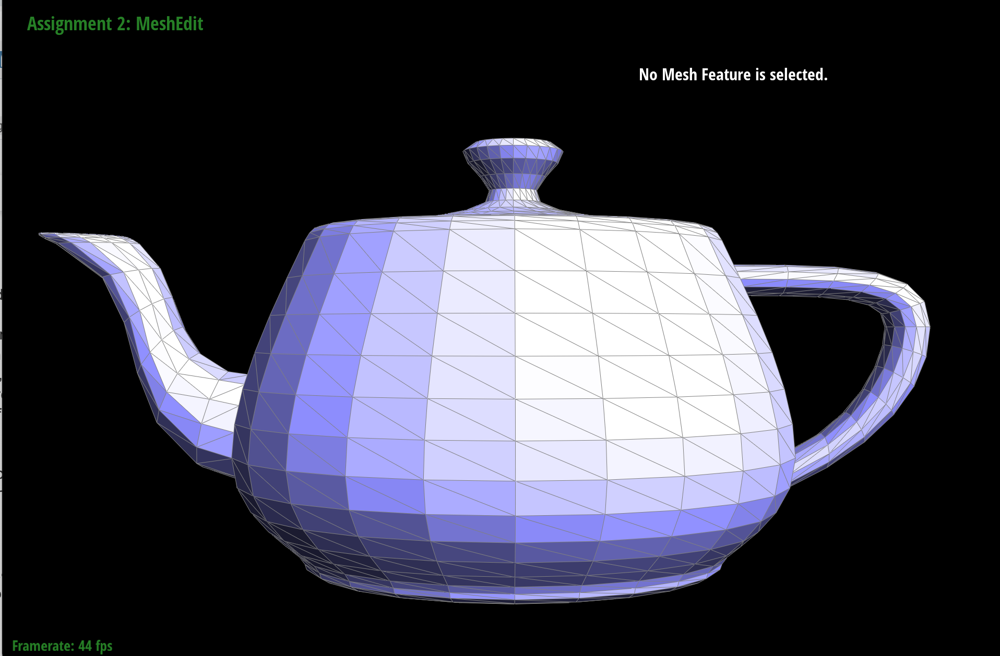
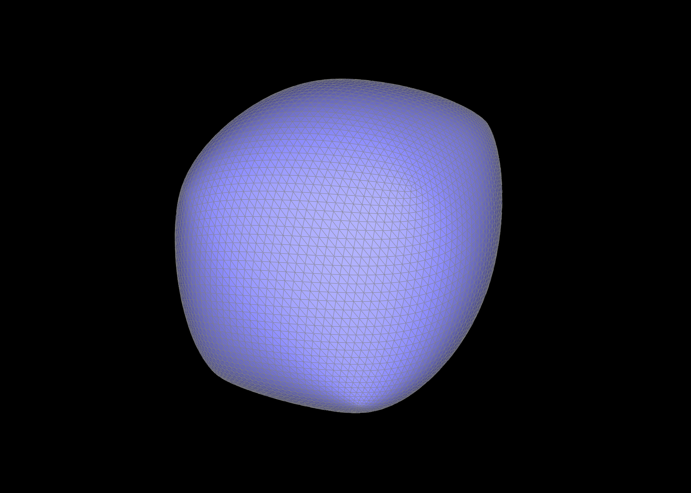

Overview
In this project, we built a mesh editor that can perform geometric operations such as curve and mesh editing. The first implementation allows for a Bezier curve to be made from a set of control points using de Casteljau's Algorithm. Building off of this, we were able to construct Bezier patches in 3D space. Another feature is triangle mesh editing using a half edge data structure. Our mesh editor can average mesh normals, flip edges, split edges, and perform Loop Subdivision.
The key takeaway from this project was realizing how many computations it really takes to edit a mesh. We are both 3D artists who use these operations regularly and this gave us a deeper understanding of how all of the data is calculated. Rather than just taking for granted the seemingly simple mesh manipulations, we can now appreciate and understand some of the engineering it takes to perform these tasks.
Section I: Bezier Curves and Surfaces
Part 1: Bezier curves with 1D de Casteljau subdivision
To implement Casteljau’s algorithm, we iterated through the list of points (size n) passed into the BezierCurve function n - 1 times.
We then use a helper “lerp” function that will linearly interpolate between two points. Thus, as we iterate through the list of points, we pass in the current and next point into our lerp function.
This lerp function will return a new 2D vector containing the linearly interpolated point given by the equation: (1 - t) * currentPoint + (t * nextPoint) — t being a decimal between 0 and 1 that will determine the inbetween distance between the two points.
We append these points into a new list, containing the new points at each intermediate level.
Performing this recursive step across multiple levels, generates the intermediary points that create our Bezier curve.
|
1st iteration
|
2nd iteration
|
3rd iteration
|
4th iteration
|
With curve
|
Modified curve
Part 2: Bezier surfaces with separable 1D de Casteljau subdivision
Since 3D surfaces can be broken down into a series of Bezier curves, we can perform the Casteljau algorithm across the evaluation points of multiple curves in order to make a smooth, interpolated surface. Each “row” in our Control Points array contains a different curve, thus we pass each row index of our control points array into our evaluate 1D function. This function recursively linearly interpolates through the array until it returns a single point: the evaluation point of the curve. Once evaluate calculates the evaluation point of each curve, we call evaluate1D on an array containing all the evaluated points. We return the output of this series of linear interpolations as our “surface point.”
|
Teapot mesh evaluated by de Casteljau subdivision
|
With wireframe
|
Section II: Sampling
Part 3: Average normals for half-edge meshes
For this part, we implemented area-weighted normal vectors at vertices, which can be used for Phong shading. This provides better shading for smooth surfaces rather than flat shading. To implement the area-weighted vertex normals, we used the HalfedgeCIter to go through each of the triangle elements. With the given reference to the half edge, we found the initial vertex position. From there, we iterated through the structure by finding the reference half edge’s twin and its root vertex. We then found the twin’s next half edge and its root vertex, giving us a total of 3 vertices.
Using the twin’s vertex and next vertex, we calculated the vectors making up those edges and took the cross product. With each iteration through the neighboring triangles, we summed up the cross products to obtain the area-weighted sum of the normals. Finally, we normalized this sum.
|

Teapot mesh with flat shading
|
Teapot mesh with smooth shading
|
Part 4: Half-edge flip
In task 4, we implemented a function that would allow the user to flip any given edge. To do this we first defined each of the surrounding half edges, vertices, edges, and faces given the passed in edge, e0. Once we defined the current mesh as variables within our algorithm, we then reassigned each half edge’s attributes after the passed in edge was flipped. Once we redefined our half edges, we then did the same for our vertices, edges, and faces. While implementing this code, our function would crash after trying to flip an edge. We found that this was because we were assuming the outer edges “next” and “face” based on the simplest case of only having two triangles. We then realized the outer edges’ “next”’ and “face” attributes would not change after the given edge was flipped, so we then adjusted our code to assign the half edge’s attributes to its current next and face pointers.
|
Original beetle mesh
|
Beetle mesh after flip operations
|
Part 5: Half-edge split
In task 5, we created a function that would take in an edge, split it, and create a new edge across the original. To implement this edge split operation, we first collected all of the elements of the original mesh by defining the relationships between all the half edges (Ex. half0 = e0->halfedge()). We did the same to define the relationships between each vertex, edge, and face with their corresponding half edges.
Since the edge split involves creating new elements, we defined 3 new edges, 8 new half edges, 2 new faces, and 1 new vertex. For the new vertex, we calculated the midpoint between the edge being split and set this to be the new vertex’s position.
Lastly, we used the setNeighbors() function to reassign all the old and new half edges with their corresponding next half edge, twin half edge, root vertex, edge, and face. For the boundary half edges, we kept the original next half edges and faces since those would be outside of the current triangle. We could then reassign the vertices, edges, and faces to their corresponding half edges.
|
Original teapot mesh
|
Teapot mesh after edge split operations
|
|
Original cow mesh
|
Cow mesh after edge split and flip operations
|
In our first test run, we encountered a bug where, if we split one edge and then split the edge of an adjacent triangle, it would delete a neighboring face.
After some time spent analyzing our code, we realized that we didn’t set the boundary half edges to their original faces. We had been reassigning them to faces inside the triangle.
Part 6: Loop subdivision for mesh upsampling
For this task, we implemented the “upsample” function that will subdivide our mesh. As it subdivides the mesh, this function will also update the existing edges and vertices’ positions to be the interpolated value of the neighboring vertices’ positions.
First we iterated through all the vertices, marking them as old, and calculated the new position of the vertex according to this equation: (1 - n * u) * original_position + u * original_neighbor_position_sum.
This calculation arrives at the old vertex’s new position by taking the weighted sum of its original position and the neighboring vertice’s positions.
These values are weighted by, (1-n*u) and u, where n is the number of edges connected to the current vertex (vertex degree) and u is 3/ 8 * n.
These new positions are then stored in a temporary “new positions” array. We then follow a similar procedure for the edges, marking all the existing edges as old, calculating their new positions, and storing those new positions in a temporary array.
After marking all the existing elements of the mesh, we then iterate through the mesh and split all the old edges.
To ensure that we do not split edges that have already been split, we set the condition that an edge will only be split if the edge, root vertex, and twin vertex is flagged as old. Once an edge is split, our split function returns the new vertex created. We then set the new vertex’s position as the edge’s new position that we had calculated earlier.
In order to maintain proper topology for the 4-1 loop subdivision, we then iterate through the mesh once again and flip the new edges that connect a new vertex and an old vertex.
Finally, after the subdivision process has completed, we iterate through all the vertices and set their final position to the corresponding weighted vertex position that we had calculated and stored in a temporary array in step one.
During the process, our most tricky bug was figuring out how to correctly mark the correct edges we wanted to flip as new.
To tackle this problem, we tracked down all the current new and old vertices and edges that were being flagged before and after the split occurred through a series of different print statements.
This allowed us to point out that there were edges being incorrectly labeled as new. We traced this back to our split edge function and made sure that the edges that we were marking as new matched the corresponding new edges we labeled in our diagram.
|
Cube at SubLevel = 0
|
Cube at SubLevel = 1
|
|
Cube at SubLevel = 2
|
Cube at SubLevel = 3
|
|
Cube at SubLevel = 4
|

Cube at SubLevel = 5
|
Tests with other meshes!
|
Cow at SubLevel = 1
|
 Cow at SubLevel = 3
Cow at SubLevel = 3
|
After loop subdivision, we notice that the orientation of the edges prior to subdivision will affect the symmetry of the object.
Our current edge flip function does not orient the diagonal boundary edge in the same direction for each face.
As a result there are small variations in how each face is subdivided.
One method we tried was flipping the diagonal edges in such a way that connects each end of the edge to the previous and next diagonal edges of the neighboring faces.
Having a level of consistency across each of the faces creates a more even distribution of the faces following subdivision.
However we still notice that some edges are subdivided into smaller faces than the rest.
|
Cube at SubLevel = 0
|
Cube at SubLevel = 1
|
|
Cube at SubLevel = 2
|
Cube at SubLevel = 3
|
A second method we tried was pre flipping the diagonal edges to connect the same corresponding vertices (i.e. top left and bottom right), the cube will divide more evenly across each of the faces.
With this method, each of the faces maintained a similar size with each level of subdivision, resulting in the most symmetrical mesh of the three different techniques.
|
Cube at SubLevel = 0
|
Cube at SubLevel = 1
|
|
Cube at SubLevel = 2
|
Cube at SubLevel = 3
|
Section III: Optional Extra Credit
If you are not participating in the optional mesh competition, don't worry about this section!
Part 7: Design your own mesh!